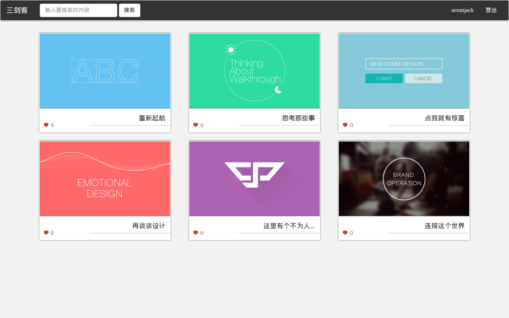
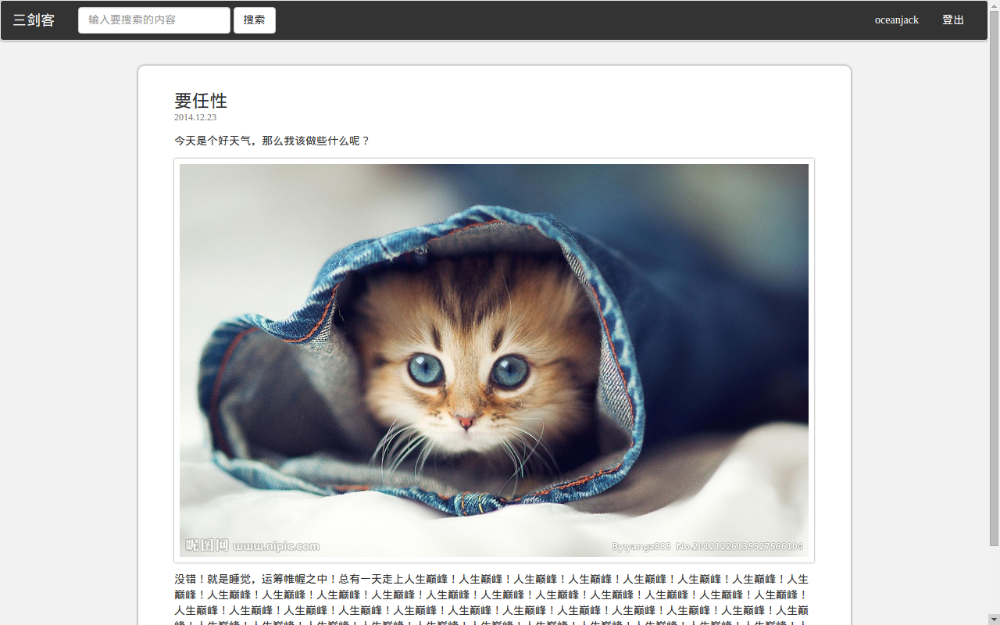
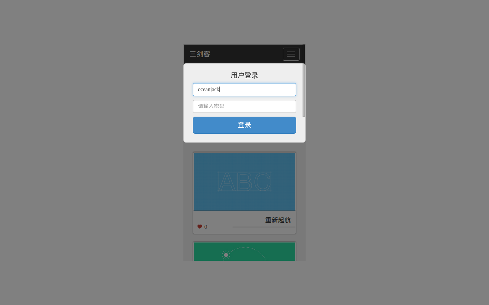

本篇介绍关于如何使用 LeanCloud，jQuery，Bootstrap 来搭建一个网站。
这几天还在研究学习并制作这个网站。LeanCloud（戳官网）用于网站的后台，jQuery 作为 js 的库使用，Bootstrap 作为 css 库使用。
首先 LeanCloud 提供了一个后台，本例使用了 JavaScript 的 API 并写在了前端脚本文件中，这会使 KEY 暴露出来。不过，LeanCloud 提供角色控制 ACL，所以可以避免一些麻烦。但是，还是要考虑架一个 Node.js 后台，一些请求的逻辑不方便都暴露出来。戳快速入门，详细一些的教程的话在这里，平台提供了登陆注册等功能，所以也提供了一个默认的数据库及一些默认的表，可以在控制台方便的查看到数据库的信息并进行操作。如此节省了一些后台开支，可以更迅速的搭建出一个相对稳定可靠的后台。
jQuery 使用较为广泛了，这里使用它处理一些 Dom 任务。然后使用 Bootstrap 来快速搭建一些界面。这是一个比较常见的组合，其实本人第一次使用 Bootstrap，jQuery 也不是第一个接触的前端框架。在这里顺便介绍下 jquery.leanModal，弹窗小插架，冒出个提示啥的，登陆框啥挺方便的。
现在前端各种库，各种工具还是不少的。比如 Facebook React，Google Closure，AngularJs，BackBone，D3等等，工具的话 npm，bower，grunt，glup等等。然后还有 Dcloud，APPCAN 这种用 js 来做 APP 的，Node 用 js 来做后台的。然后有对 js 和 css 语言做了一些扩展，有了 coffeescript，typescript，less，sass，scss等等，东西太多慢慢品尝吧
演示请戳这里
首页
文章页
手机端
声明下图示是临时的...